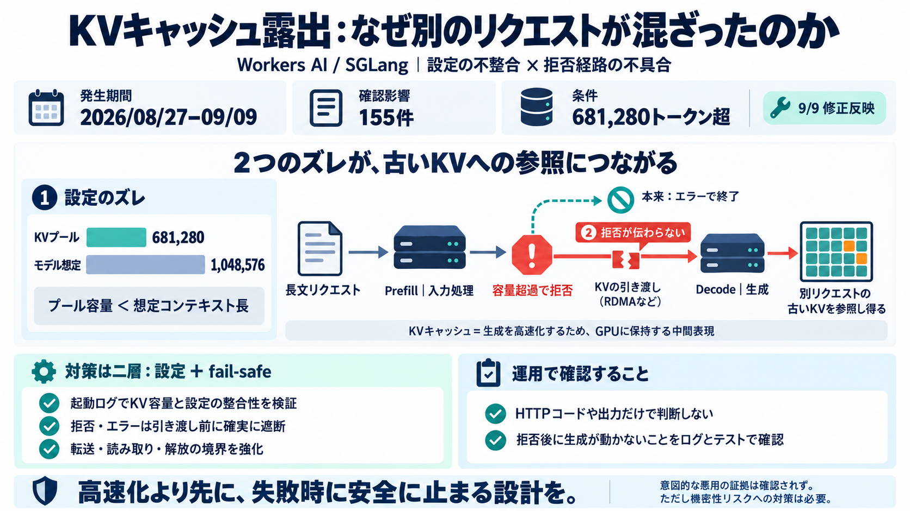

SGLang security update: improving request isolation - LMSYS Org
On September 9, 2026, Cloudflare notified us of cross-request KV cache exposure in its GLM-5.3 deployment on Workers AI.…

On September 9, 2026, Cloudflare notified us of cross-request KV cache exposure in its GLM-5.3 deployment on Workers AI.…
## To upgrade SGLang now requires Python 3.11 or newer. ``` uv pip install --prerelease=allow sglang==0.5.22 ``` | Pl…
All our experiments and production traffic are running and benchmarked with SGLang, an open-source inference serving fra…
Workers AI and AI Gateway now provide a unified path for accessing models and managing inference traffic. Use the same A…
ibl.ai EngineeringSeptember 7, 2026### Self-Hosted LLM Providers: Ollama vs vLLM vs TGI vs LocalAI A practical guide to…